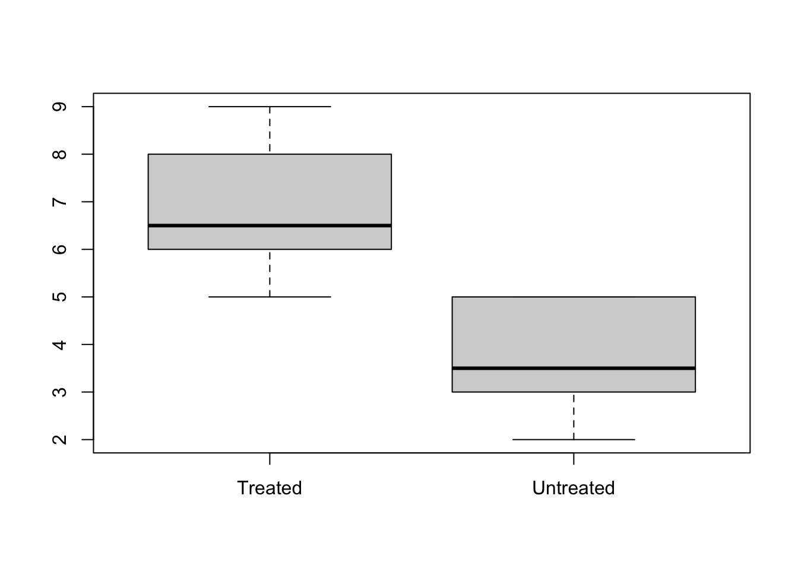
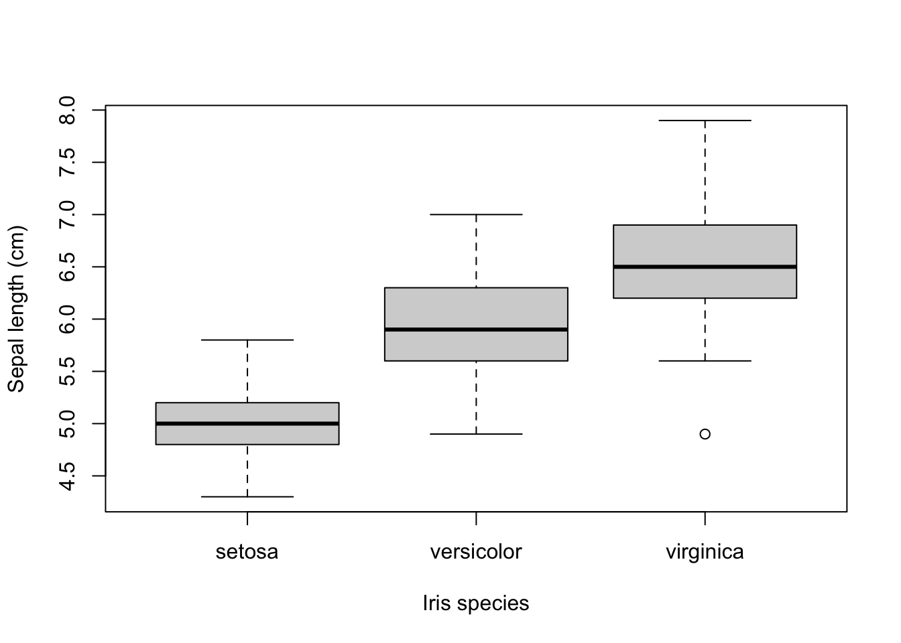

Chapter 8 Dataframe manipulations
Dataframes are ubiquitous in R-based data analyses. Many R functions and packages are tailored specifically for DF manipulations - you have already seen cbind(), rbind() and subset().
In this presentation, we’ll explore a few new functions and techniques for working with DFs:
apply()lapply()sapply()tapply()aggregate()split()
8.1 The apply() family of functions
Looping with for may be tempting, but highly discouraged in R because its inefficient. Ususally one of these functions will do it better:
apply: Apply a function over the “margins” of a dataframe - rows or columns or bothlapply: Loop over a list and evaluate a function on each element; returns a list of the same lengthsapply: Same as lapply but try to simplify the resulttapply: Apply a function over subsets of a vector (read: split with a factor)
There are more but these are the important ones.
8.1.1 apply(): Apply Functions Over Array Margins
- Suppose you want to know the means of all columns of a dataframe.
apply()needs to know- what DF to apply to (
X) - over which margin(s) - columns and/or rows (
MARGIN) - what function to apply (
FUN)
- what DF to apply to (
apply(X = cars, MARGIN = 2, FUN = mean) # apply over columns## speed dist
## 15.40 42.98Here, a function is applied to both columns and rows
df <- data.frame(x = 1:5, y = 6:10)
minus_one_squared <- function(x) (x-1)^2
apply(X = df, MARGIN = c(1,2), FUN = minus_one_squared)## x y
## [1,] 0 25
## [2,] 1 36
## [3,] 4 49
## [4,] 9 64
## [5,] 16 81(Ok, that was a bit lame: minus_one_squared(df) does the same)
The Body Mass Index, or BMI, is calculated as \((weight / height ^ 2) * 703\) where weight is in pounds and height in inches. Here it is calculated for the build in dataset women.
head(women, n=3)## height weight
## 1 58 115
## 2 59 117
## 3 60 120women$bmi <- apply(X = women,
MARGIN = 1,
FUN = function(x) (x[2] / x[1]^2) * 703)
head(women, n=4)## height weight bmi
## 1 58 115 24.03
## 2 59 117 23.63
## 3 60 120 23.43
## 4 61 123 23.24Pass arguments to the applied function
Sometimes the applied function needs to have other arguments passed besides the row or column. The ... argument to apply() makes this possible (type ?apply to see more info)
# function sums and powers up
spwr <- function(x, p = 2) {sum(x)^p}
# a simple dataframe
df <- data.frame(a = 1:5, b = 6:10)
df## a b
## 1 1 6
## 2 2 7
## 3 3 8
## 4 4 9
## 5 5 10# spwr will use the default value for p (p = 2)
apply(X = df, MARGIN = 1, FUN = spwr) ## [1] 49 81 121 169 225# pass power p = 3 to function spwr (argument names omitted)
apply(df, 1, spwr, p = 3) ## [1] 343 729 1331 2197 3375Note: The ... argument works for all ..apply.. functions.
8.1.2 lapply(): Apply a Function over a List or Vector
Function lapply() applies a function to all elements of a list and returns a list with the same length, each element the result of applying the function
myNumbers = list(
one = c(1, 3, 4),
two = c(3, 2, 6, 1),
three = c(5, 7, 6, 8, 9))
lapply(X = myNumbers, FUN = mean)## $one
## [1] 2.667
##
## $two
## [1] 3
##
## $three
## [1] 7Here is the same list, but now with sqrt() applied. Notice how the nature of the applied function influences the result.
lapply(X = myNumbers, FUN = sqrt)## $one
## [1] 1.000 1.732 2.000
##
## $two
## [1] 1.732 1.414 2.449 1.000
##
## $three
## [1] 2.236 2.646 2.449 2.828 3.0008.1.3 sapply(): Apply a Function over a List or Vector and Simplify
When using the same example as above, but with sapply, you get a vector returned. Note that the resulting vector is a named vector, a convenient feature of sapply
myNumbers = list(
one = c(1, 3, 4),
two = c(3, 2, 6, 1),
three = c(5, 7, 6, 8, 9))
sapply(X = myNumbers, FUN = mean)## one two three
## 2.667 3.000 7.000When the result can not be simplified, you get the same list as with lapply():
sapply(X = myNumbers, FUN = sqrt)## $one
## [1] 1.000 1.732 2.000
##
## $two
## [1] 1.732 1.414 2.449 1.000
##
## $three
## [1] 2.236 2.646 2.449 2.828 3.0008.1.3.1 wasn’t a dataframe also a list?
Yes! It is also list(ish). Both lapply() and sapply() work just fine on dataframes:
lapply(X = cars, FUN = mean)## $speed
## [1] 15.4
##
## $dist
## [1] 42.98sapply(X = cars, FUN = mean) ## speed dist
## 15.40 42.98By the way, sapply and lapply also work with vectors.
8.1.4 tapply(): Apply a Function Over a Ragged Array
What tapply() does is apply a function over subsets of a vector; it splits a vector into groups according to the levels in a second vector and applies the given function to each group.
tapply(X = chickwts$weight, INDEX = chickwts$feed, FUN = sd)## casein horsebean linseed meatmeal soybean sunflower
## 64.43 38.63 52.24 64.90 54.13 48.848.1.5 split(): Divide into Groups and Reassemble
This is similar to tapply() in the sense that is uses a factor to split its first argument. But where tapply() splits a vector, split() splits a dataframe - into list of dataframes.
You use split() when a dataframe needs to be divided depending on the value of some grouping variable.
Here we have the response of Treated (T) and Untreated (UT) subjects
myData <- data.frame(
response = c(5, 8, 4, 5, 9, 3, 6, 7, 3, 6, 5, 2),
treatment = factor(
c("UT", "T", "UT", "UT", "T", "UT", "T", "T", "UT", "T", "T", "UT")))
splData <- split(x = myData, f = myData$treatment)
str(splData)## List of 2
## $ T :'data.frame': 6 obs. of 2 variables:
## ..$ response : num [1:6] 8 9 6 7 6 5
## ..$ treatment: Factor w/ 2 levels "T","UT": 1 1 1 1 1 1
## $ UT:'data.frame': 6 obs. of 2 variables:
## ..$ response : num [1:6] 5 4 5 3 3 2
## ..$ treatment: Factor w/ 2 levels "T","UT": 2 2 2 2 2 2boxplot(splData$T$response, splData$UT$response,
names = c("Treated", "Untreated"))
Note that this trivial example could also have been done with boxplot(myData$response ~ myData$treatment).
Here you can see that split() also works with vectors.
split(x = rnorm(10), f = rep(c("sick", "healthy"), each=5))## $healthy
## [1] -0.35028 1.37414 -0.29972 0.09764 0.38119
##
## $sick
## [1] 1.1886 1.0599 1.3368 -0.3672 -0.30438.1.6 aggregate(): Compute Summary Statistics of Data Subsets
Splits the data into subsets, computes summary statistics for each, and returns the result in a convenient form.
aggregate(formula = Temp ~ Month, data = airquality, FUN = mean)## Month Temp
## 1 May 65.55
## 2 June 79.10
## 3 July 83.90
## 4 August 83.97
## 5 September 76.90Aggregate has two usage techniques:
with a formula:
aggregate(formula, data, FUN, ...)with a list:
aggregate(x, by, FUN, ...)
I really like aggregate(), especially the first form. That is, until I got to know the dplyr package.
Both forms of aggregate() will be demonstrated
Aggregate with formula
The left part of the formula accepts one, several or all columns as dependent variables.
##two dependents
aggregate(cbind(Temp, Ozone) ~ Month, data = airquality, FUN = mean)## Month Temp Ozone
## 1 May 66.73 23.62
## 2 June 78.22 29.44
## 3 July 83.88 59.12
## 4 August 83.96 59.96
## 5 September 76.90 31.45##all
aggregate(. ~ Month, data = airquality, FUN = mean)## Month Ozone Solar.R Wind Temp Day foo bar
## 1 May 24.12 182.0 11.504 66.46 16.08 1 0.3333
## 2 June 29.44 184.2 12.178 78.22 14.33 1 0.3333
## 3 July 59.12 216.4 8.523 83.88 16.23 1 0.8077
## 4 August 60.00 173.1 8.861 83.70 17.17 1 0.6957
## 5 September 31.45 168.2 10.076 76.90 15.10 1 0.3448The right part can also accept multiple independent variables
airquality$Temp_factor <- cut(airquality$Temp, breaks = 2, labels = c("low", "high"))
aggregate(Ozone ~ Month + Temp_factor, data = airquality, FUN = mean)## Month Temp_factor Ozone
## 1 May low 18.92
## 2 June low 20.50
## 3 July low 13.00
## 4 August low 16.00
## 5 September low 17.62
## 6 May high 80.00
## 7 June high 36.60
## 8 July high 62.96
## 9 August high 63.62
## 10 September high 48.46The by = list(...) form
This is the other form of aggregate. It is more elaborate in my opinion because you need te spell out all vectors you want to work on.
aggregate(x = chickwts$weight, by = list(feed = chickwts$feed), FUN = mean)## feed x
## 1 casein 323.6
## 2 horsebean 160.2
## 3 linseed 218.8
## 4 meatmeal 276.9
## 5 soybean 246.4
## 6 sunflower 328.9Here is another example:
aggregate(x = airquality$Wind,
by = list(month = airquality$Month, temperature = airquality$Temp_factor),
FUN = mean)## month temperature x
## 1 May low 11.714
## 2 June low 9.855
## 3 July low 10.600
## 4 August low 11.433
## 5 September low 11.394
## 6 May high 10.300
## 7 June high 10.505
## 8 July high 8.828
## 9 August high 8.511
## 10 September high 8.793But it is better to wrap it in with():
with(airquality, aggregate(x = Wind,
by = list(month = Month, temperature = Temp_factor),
FUN = mean))8.1.7 Many roads lead to Rome
The next series of examples are all essentially the same. The message is: there is more than one way to do it!
aggregate(weight ~ feed, data = chickwts, FUN = mean)## feed weight
## 1 casein 323.6
## 2 horsebean 160.2
## 3 linseed 218.8
## 4 meatmeal 276.9
## 5 soybean 246.4
## 6 sunflower 328.9same as
head(aggregate(x = chickwts$weight, by = list(feed = chickwts$feed), FUN = mean), n=3)## feed x
## 1 casein 323.6
## 2 horsebean 160.2
## 3 linseed 218.8same as
tapply(chickwts$weight, chickwts$feed, mean)## casein horsebean linseed meatmeal soybean sunflower
## 323.6 160.2 218.8 276.9 246.4 328.9with(chickwts, tapply(weight, feed, mean))## casein horsebean linseed meatmeal soybean sunflower
## 323.6 160.2 218.8 276.9 246.4 328.9same as
sapply(split(chickwts, chickwts$feed), function(x){mean(x$weight)})## casein horsebean linseed meatmeal soybean sunflower
## 323.6 160.2 218.8 276.9 246.4 328.9And this is the topic of the next course:
library(dplyr)
group_by(chickwts, feed) %>% summarise(mean_weigth = mean(weight))## # A tibble: 6 x 2
## feed mean_weigth
## <fct> <dbl>
## 1 casein 324.
## 2 horsebean 160.
## 3 linseed 219.
## 4 meatmeal 277.
## 5 soybean 246.
## 6 sunflower 329.8.2 Example Use Cases
In this chapter, some example use cases will be presented demonstrating some concept or function. The topics for these use cases are selected because they appear to be harder to comprehend for my students, are a bit out of scope for the lectures, or because they are simply too extensive to fit into a few slides of a presentation.
8.2.1 Dataframe Selections
R offers a wealth of methods to make selection on dataframes by columns, rows, or both.
We’ll explore the iris dataset, a dataframe holding morphological data on several species of plants from the genus Iris:
knitr::kable(head(iris, 10))| Sepal.Length | Sepal.Width | Petal.Length | Petal.Width | Species |
|---|---|---|---|---|
| 5.1 | 3.5 | 1.4 | 0.2 | setosa |
| 4.9 | 3.0 | 1.4 | 0.2 | setosa |
| 4.7 | 3.2 | 1.3 | 0.2 | setosa |
| 4.6 | 3.1 | 1.5 | 0.2 | setosa |
| 5.0 | 3.6 | 1.4 | 0.2 | setosa |
| 5.4 | 3.9 | 1.7 | 0.4 | setosa |
| 4.6 | 3.4 | 1.4 | 0.3 | setosa |
| 5.0 | 3.4 | 1.5 | 0.2 | setosa |
| 4.4 | 2.9 | 1.4 | 0.2 | setosa |
| 4.9 | 3.1 | 1.5 | 0.1 | setosa |
There are only three species in this dataset
table(iris$Species)##
## setosa versicolor virginica
## 50 50 50but how do they relate to each other with repect to Sepal length?
with(iris, boxplot(Sepal.Length ~ Species,
ylab = "Sepal length (cm)",
xlab = "Iris species"))
Now suppose I want to get the data from virginica plants that have a Sepal length smaller than the largest Sepal length of setosa plants? First of course we’ll need the maximum of the setosa plants:
max.setosa <- max(iris[iris$Species == "setosa", "Sepal.Length"])
max.setosa## [1] 5.8Which plant is it? Let’s use the subset function to find out.
subset(x = iris,
subset = (Species == "setosa" & Sepal.Length == max.setosa))## Sepal.Length Sepal.Width Petal.Length Petal.Width Species
## 15 5.8 4 1.2 0.2 setosaNow filter out the virginica plants that have a Sepal length smaller than this value. I’ll show two approaches, one with logical indexing and one with subset
##get a logical for small plants
logi.small.sepal <- iris$Sepal.Length < max.setosa
logi.small.sepal## [1] TRUE TRUE TRUE TRUE TRUE TRUE TRUE TRUE TRUE TRUE TRUE
## [12] TRUE TRUE TRUE FALSE TRUE TRUE TRUE TRUE TRUE TRUE TRUE
## [23] TRUE TRUE TRUE TRUE TRUE TRUE TRUE TRUE TRUE TRUE TRUE
## [34] TRUE TRUE TRUE TRUE TRUE TRUE TRUE TRUE TRUE TRUE TRUE
## [45] TRUE TRUE TRUE TRUE TRUE TRUE FALSE FALSE FALSE TRUE FALSE
## [56] TRUE FALSE TRUE FALSE TRUE TRUE FALSE FALSE FALSE TRUE FALSE
## [67] TRUE FALSE FALSE TRUE FALSE FALSE FALSE FALSE FALSE FALSE FALSE
## [78] FALSE FALSE TRUE TRUE TRUE FALSE FALSE TRUE FALSE FALSE FALSE
## [89] TRUE TRUE TRUE FALSE FALSE TRUE TRUE TRUE TRUE FALSE TRUE
## [100] TRUE FALSE FALSE FALSE FALSE FALSE FALSE TRUE FALSE FALSE FALSE
## [111] FALSE FALSE FALSE TRUE FALSE FALSE FALSE FALSE FALSE FALSE FALSE
## [122] TRUE FALSE FALSE FALSE FALSE FALSE FALSE FALSE FALSE FALSE FALSE
## [133] FALSE FALSE FALSE FALSE FALSE FALSE FALSE FALSE FALSE FALSE FALSE
## [144] FALSE FALSE FALSE FALSE FALSE FALSE FALSE##get a logical for virginica plants
logi.virginica <- iris$Species == "virginica"
logi.virginica## [1] FALSE FALSE FALSE FALSE FALSE FALSE FALSE FALSE FALSE FALSE FALSE
## [12] FALSE FALSE FALSE FALSE FALSE FALSE FALSE FALSE FALSE FALSE FALSE
## [23] FALSE FALSE FALSE FALSE FALSE FALSE FALSE FALSE FALSE FALSE FALSE
## [34] FALSE FALSE FALSE FALSE FALSE FALSE FALSE FALSE FALSE FALSE FALSE
## [45] FALSE FALSE FALSE FALSE FALSE FALSE FALSE FALSE FALSE FALSE FALSE
## [56] FALSE FALSE FALSE FALSE FALSE FALSE FALSE FALSE FALSE FALSE FALSE
## [67] FALSE FALSE FALSE FALSE FALSE FALSE FALSE FALSE FALSE FALSE FALSE
## [78] FALSE FALSE FALSE FALSE FALSE FALSE FALSE FALSE FALSE FALSE FALSE
## [89] FALSE FALSE FALSE FALSE FALSE FALSE FALSE FALSE FALSE FALSE FALSE
## [100] FALSE TRUE TRUE TRUE TRUE TRUE TRUE TRUE TRUE TRUE TRUE
## [111] TRUE TRUE TRUE TRUE TRUE TRUE TRUE TRUE TRUE TRUE TRUE
## [122] TRUE TRUE TRUE TRUE TRUE TRUE TRUE TRUE TRUE TRUE TRUE
## [133] TRUE TRUE TRUE TRUE TRUE TRUE TRUE TRUE TRUE TRUE TRUE
## [144] TRUE TRUE TRUE TRUE TRUE TRUE TRUE##combine the two via a boolean operation
logi.both <- logi.small.sepal & logi.virginica
logi.both## [1] FALSE FALSE FALSE FALSE FALSE FALSE FALSE FALSE FALSE FALSE FALSE
## [12] FALSE FALSE FALSE FALSE FALSE FALSE FALSE FALSE FALSE FALSE FALSE
## [23] FALSE FALSE FALSE FALSE FALSE FALSE FALSE FALSE FALSE FALSE FALSE
## [34] FALSE FALSE FALSE FALSE FALSE FALSE FALSE FALSE FALSE FALSE FALSE
## [45] FALSE FALSE FALSE FALSE FALSE FALSE FALSE FALSE FALSE FALSE FALSE
## [56] FALSE FALSE FALSE FALSE FALSE FALSE FALSE FALSE FALSE FALSE FALSE
## [67] FALSE FALSE FALSE FALSE FALSE FALSE FALSE FALSE FALSE FALSE FALSE
## [78] FALSE FALSE FALSE FALSE FALSE FALSE FALSE FALSE FALSE FALSE FALSE
## [89] FALSE FALSE FALSE FALSE FALSE FALSE FALSE FALSE FALSE FALSE FALSE
## [100] FALSE FALSE FALSE FALSE FALSE FALSE FALSE TRUE FALSE FALSE FALSE
## [111] FALSE FALSE FALSE TRUE FALSE FALSE FALSE FALSE FALSE FALSE FALSE
## [122] TRUE FALSE FALSE FALSE FALSE FALSE FALSE FALSE FALSE FALSE FALSE
## [133] FALSE FALSE FALSE FALSE FALSE FALSE FALSE FALSE FALSE FALSE FALSE
## [144] FALSE FALSE FALSE FALSE FALSE FALSE FALSE##use it as a selector on the rows of the iris DF
iris[logi.both, ]## Sepal.Length Sepal.Width Petal.Length Petal.Width Species
## 107 4.9 2.5 4.5 1.7 virginica
## 114 5.7 2.5 5.0 2.0 virginica
## 122 5.6 2.8 4.9 2.0 virginicaOf course, you will usually perform this selection in one statement, but the operations carried out by R will be exactly the same (but without creating any variables of course):
iris[iris$Sepal.Length < max.setosa & iris$Species == "virginica", ]## Sepal.Length Sepal.Width Petal.Length Petal.Width Species
## 107 4.9 2.5 4.5 1.7 virginica
## 114 5.7 2.5 5.0 2.0 virginica
## 122 5.6 2.8 4.9 2.0 virginicaThe function subset will do the same behind the scenes, but your code may be more to your liking:
subset(x = iris,
subset = Sepal.Length < max.setosa & Species == "virginica")## Sepal.Length Sepal.Width Petal.Length Petal.Width Species
## 107 4.9 2.5 4.5 1.7 virginica
## 114 5.7 2.5 5.0 2.0 virginica
## 122 5.6 2.8 4.9 2.0 virginicaBy the way, beware to use only one boolean and: &, not &&. This will not give an error but only an empty result set
subset(x = iris,
subset = Sepal.Length < max.setosa && Species == "virginica")## [1] Sepal.Length Sepal.Width Petal.Length Petal.Width Species
## <0 rows> (or 0-length row.names)& and && indicate logical AND and | and || indicate logical OR. The shorter form performs elementwise comparisons in much the same way as arithmetic operators. The longer form evaluates left to right examining only the first element of each vector. Evaluation proceeds only until the result is determined. The longer form is appropriate for programming control-flow and typically preferred in if clauses.
Can you figure out why using && would give an empty set in the above case?
See The R manual for details.
8.2.2 Apply
Consider the women dataset, holding height and weight of a population sample of 15 women:
knitr::kable(women)| height | weight | bmi |
|---|---|---|
| 58 | 115 | 24.03 |
| 59 | 117 | 23.63 |
| 60 | 120 | 23.43 |
| 61 | 123 | 23.24 |
| 62 | 126 | 23.04 |
| 63 | 129 | 22.85 |
| 64 | 132 | 22.66 |
| 65 | 135 | 22.46 |
| 66 | 139 | 22.43 |
| 67 | 142 | 22.24 |
| 68 | 146 | 22.20 |
| 69 | 150 | 22.15 |
| 70 | 154 | 22.09 |
| 71 | 159 | 22.17 |
| 72 | 164 | 22.24 |
To calculate the average height and the average weight of this sample, one could of course simply do
with(women, {
print(mean(height))
print(mean(weight))
})## [1] 65
## [1] 136.7However, when your dataset has (a lot) more columns, repeating this will be quite tedious…unless you use a for loop
for (i in 1:length(women)) {
print(mean(women[,i]))
}## [1] 65
## [1] 136.7
## [1] 22.72Enter apply(), a very nice function to do this in a handy one-liner
apply(X = women, MARGIN = 2, FUN = mean)## height weight bmi
## 65.00 136.73 22.72The arguments I supplied to applyhave the following purpose:
X = womenspecifies the data to be processedMARGIN = 2specifies wether columns or rows shoud be processed; 1 = rows and 2 = columnsFUN = meanspeciefies the function to be applied to the given dataframe
Not only gives apply the the exact same result (of course, duh), but this approach has several advantages:
applyreturns a named vector where the elements are named the same as the corresponding columns of the original dataframeapplyis computationally more efficient than the other approaches- it requires less code; a good programmer types as little as possible - except for Java programmers of course :-)
If you really have strongh feelings about typing no more than strictly required, you can of course also omit the method parameters:
apply(women, 2, mean)## height weight bmi
## 65.00 136.73 22.72But if you are just starting out with R, I suggest you invest those few character strokes for readability later on.
The above example dealt with columns. For instance, if you want to calculate the BMI of these women, you’ll need to target the rows. The BMI formula is \[weight/height^2*703\]
where weight is in pounds and height is in inches.
This formula is implemented in the following function.
bmi <- function(height, weight) {
(weight / height^2) * 703
}
bmi(65, 150)## [1] 24.96You can also apply the formula to the women dataset:
women$bmi1 <- apply(
X = women,
MARGIN = 1,
FUN = function(x){(x[2] / x[1]^2) * 703})
head(women, n = 4)## height weight bmi bmi1
## 1 58 115 24.03 24.03
## 2 59 117 23.63 23.63
## 3 60 120 23.43 23.43
## 4 61 123 23.24 23.24if you like to use your own formula (it’s always a good idea to write logic only once and reuse it in different places), you’ll still need to wrap it inside an anonymous function call:
women$bmi2 <- apply(
X = women,
MARGIN = 1,
FUN = function(x){bmi(x[1], x[2])})
head(women, n = 4)## height weight bmi bmi1 bmi2
## 1 58 115 24.03 24.03 24.03
## 2 59 117 23.63 23.63 23.63
## 3 60 120 23.43 23.43 23.43
## 4 61 123 23.24 23.24 23.248.2.3 Processing Embedded Dataframes
Suppose you have imported some data that has a structure like this
genes <- c("gene A", "gene B", "gene C", "gene D")
positions <- c("chr01:128757:129667",
"chr01:366389:486990",
"chr02:8986463:9100856",
"chr03:53536:87201")
my.genome <- data.frame(gene = genes, position = positions)
my.genome## gene position
## 1 gene A chr01:128757:129667
## 2 gene B chr01:366389:486990
## 3 gene C chr02:8986463:9100856
## 4 gene D chr03:53536:87201The problem here is that the second column, positions, of type character, actually holds three different variables: the chromosome identifyer, the start position and the stop position on the chromosome. To be able to perform analyses of chromosomal contents, or positional contexts, we will need to split this column into separate columns, each holding exactly one variable of the correct type (factor, integer and integer).
When I first encountered this type of problem (it is a challenge actually, some teachers would object, not a problem…), my first thought was “easy, simply apply a split and bind as three columns”.
Let’s have a look at how the strsplit function works in splitting strings
strsplit(x = positions[1:2], split = ":")## [[1]]
## [1] "chr01" "128757" "129667"
##
## [[2]]
## [1] "chr01" "366389" "486990"As you can see, strsplit generates a list of vectors, with each vector corresponding to the string at the same index of the original character vector. So, easy, I thought. Simply assign these elements to three new columns of the original dataframe (assuming every split character results in a vector of three). I first created the columns, defined my splitter function and then used apply to get the job done
## create columns
my.genome[, c("chromosome", "start", "stop")] <- NA
## define splitter function
loc.splitter <- function(x) {
## strsplit returns a list!
strsplit(x["position"], ":")[[1]]
}
## use apply to fill the columns
my.genome[, 3:5] <- apply(X = my.genome,
MARGIN = 1,
FUN = loc.splitter)
my.genome## gene position chromosome start stop
## 1 gene A chr01:128757:129667 chr01 366389 9100856
## 2 gene B chr01:366389:486990 128757 486990 chr03
## 3 gene C chr02:8986463:9100856 129667 chr02 53536
## 4 gene D chr03:53536:87201 chr01 8986463 87201Whoa, what happened here?! This was not what I had in mind. Can you figure out what happened?
…
I did figure it out (eventually…). The applied function returned three elements at a time, and I had apply fill three columns of my dataframe. And that is exactly what R did, fill the three columns, but not by row but by column! Have a look at the output from apply and you can see:
apply(X = my.genome,
MARGIN = 1,
FUN = loc.splitter)## [,1] [,2] [,3] [,4]
## [1,] "chr01" "chr01" "chr02" "chr03"
## [2,] "128757" "366389" "8986463" "53536"
## [3,] "129667" "486990" "9100856" "87201"Fortunately, R has a function to transpose this kind of structure (a matrix actually): the t() function, so that is what I did:
my.genome[, 3:5] <- t(apply(X = my.genome,
MARGIN = 1,
FUN = loc.splitter))
my.genome## gene position chromosome start stop
## 1 gene A chr01:128757:129667 chr01 128757 129667
## 2 gene B chr01:366389:486990 chr01 366389 486990
## 3 gene C chr02:8986463:9100856 chr02 8986463 9100856
## 4 gene D chr03:53536:87201 chr03 53536 87201Yeah, that’s what I’m talking about! (Feeling very happy with myself…until I googled this problem). I found out there are a gazillion solutions to this problem, but only one of them is very very simple, because it uses a function you know really well: read.table, but not with the file = argument but with text =:
my.genome <- data.frame(gene = genes, position = positions)
my.genome <- cbind(
my.genome,
read.table(
text = as.character(my.genome$position),
sep = ":"))
colnames(my.genome) <- c(colnames(my.genome)[1:2], "chr", "start", "stop")
my.genome## gene position chr start stop
## 1 gene A chr01:128757:129667 chr01 128757 129667
## 2 gene B chr01:366389:486990 chr01 366389 486990
## 3 gene C chr02:8986463:9100856 chr02 8986463 9100856
## 4 gene D chr03:53536:87201 chr03 53536 87201That’s it. The lessons learned here:
- Always know that GIYF (Google Is Your Friend)
- When reading tables, also those embedded within others, use
read.table - You really learn a lot by fiddling about with data